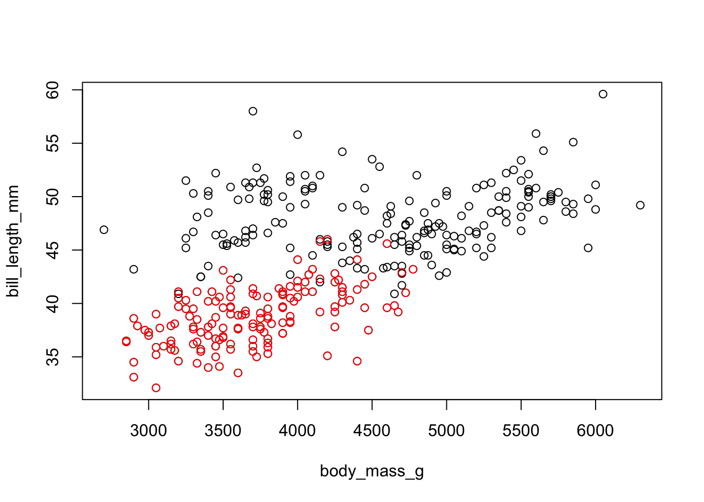

xx <- c(1, 5, 2, 3, 5)
xx[1] 1 5 2 3 5✏️
As a biologist, these data manipulation topics may seem dry, but they are really powerful and will allow you do to much more sophisticated analyses, and to do them with confidence.
There are two main steps in the data analysis pipeline where these skills become critical:
Vetting and reorganizing the data can take more programming time and effort than the actual statistical analyses. These tools will be a huge help, so it is well worth taking some time to learn how to use them well.
At the end of this lesson you will know how to use:
In general, accessing elements of vectors, matrices, or dataframes is achieved through indexing by position or name.
This is extremely useful for selecting relevant data, excluding irrelevant data, or selcting building blocks to form new objects.
There are many ways to achieve this:
is.na() function.The index of a vector is it’s number in the array. Each and every element in any data object has at least one index (if vector, it is one dimensional so it is its position along the vector, if a matrix or data frame, which are two-dimensional, it’s the row and column number, etc.)
Let’s create a vector:
xx <- c(1, 5, 2, 3, 5)
xx[1] 1 5 2 3 5Access specific values of xx by number:
xx[1][1] 1xx[3][1] 2You can use a function to generate an index. Get the last element (without knowing how many there are) by:
xx[length(xx)][1] 5Retrieve multiple elements of xx by using a vector as an argument:
Exclude elements by using a negative index:
xx[1] 1 5 2 3 5xx[-1] # exclude first[1] 5 2 3 5xx[-2] # exclude second[1] 1 2 3 5xx[-(1:3)] # exclude first through third[1] 3 5xx[-c(2, 4)] # exclude second and fourth, etc. [1] 1 2 5Use a logical vector:
xx[ c( T, F, T, F, T) ] # T is the same as TRUE[1] 1 2 5xx > 2[1] FALSE TRUE FALSE TRUE TRUExx[ xx > 2 ][1] 5 3 5xx > 2 & xx < 5[1] FALSE FALSE FALSE TRUE FALSExx[ xx>2 & xx<5][1] 3Subsetting (picking particular observations out of an R object) is something that you will have to do all the time. It’s worth the time to understand it clearly.
subset_xx <- xx[ xx > 2 ]
subset_xx2 <- subset(xx, xx>2) # using subset function
subset_xx == subset_xx2 # check if the same[1] TRUE TRUE TRUEThe subset function is just another way of subsetting by index, just in function form with arguments. It can be more clear to use for dataframes, but it is really a matter of personal preference as you develop your style. Whichever way you go, it is important to be aware of the different ways to achieve the same goals.
Matrices and dataframes are both rectangular having two dimensions, and are handled very similarly for indexing and subsetting.
Let’s work with a dataframe that is provided with the geiger package called geospiza. It is a list with a tree and a dataframe. The dataframe contains five morphological measurements for 13 species. First, let’s clear the workspace (or clear and start a new R session):
install.packages("geiger") # if you need to install geigerGet the built-in dataset this way:
Loading required package: apeLoading required package: phytoolsLoading required package: maps[1] "geospiza"Let’s find out some basic information about this object:
class(geospiza)[1] "list"attributes(geospiza)$names
[1] "geospiza.tree" "geospiza.data" "phy" "dat" str(geospiza)List of 4
$ geospiza.tree:List of 4
..$ edge : num [1:26, 1:2] 15 16 17 18 19 20 21 22 23 24 ...
..$ edge.length: num [1:26] 0.2974 0.0492 0.0686 0.134 0.1035 ...
..$ Nnode : int 13
..$ tip.label : chr [1:14] "fuliginosa" "fortis" "magnirostris" "conirostris" ...
..- attr(*, "class")= chr "phylo"
$ geospiza.data: num [1:13, 1:5] 4.4 4.35 4.22 4.26 4.24 ...
..- attr(*, "dimnames")=List of 2
.. ..$ : chr [1:13] "magnirostris" "conirostris" "difficilis" "scandens" ...
.. ..$ : chr [1:5] "wingL" "tarsusL" "culmenL" "beakD" ...
$ phy :List of 4
..$ edge : num [1:26, 1:2] 15 16 17 18 19 20 21 22 23 24 ...
..$ edge.length: num [1:26] 0.2974 0.0492 0.0686 0.134 0.1035 ...
..$ Nnode : int 13
..$ tip.label : chr [1:14] "fuliginosa" "fortis" "magnirostris" "conirostris" ...
..- attr(*, "class")= chr "phylo"
$ dat : num [1:13, 1:5] 4.4 4.35 4.22 4.26 4.24 ...
..- attr(*, "dimnames")=List of 2
.. ..$ : chr [1:13] "magnirostris" "conirostris" "difficilis" "scandens" ...
.. ..$ : chr [1:5] "wingL" "tarsusL" "culmenL" "beakD" ...It is a list with four elements. Here we want the data
geo <- geospiza$geospiza.data
dim(geo)[1] 13 5Its a rectangle of data, but let’s see what type of object it is:
class(geo)[1] "matrix" "array" It is a matrix, but we want to work with a dataframe, so let’s coerce it:
geo <- as.data.frame(geo)If we want to know all the attributes of geo:
attributes(geo)$names
[1] "wingL" "tarsusL" "culmenL" "beakD" "gonysW"
$class
[1] "data.frame"
$row.names
[1] "magnirostris" "conirostris" "difficilis" "scandens" "fortis"
[6] "fuliginosa" "pallida" "fusca" "parvulus" "pauper"
[11] "Pinaroloxias" "Platyspiza" "psittacula" It is a dataframe with 13 rows and 5 columns. We see that it has a “names” attribute, which refers to column names in a dataframe. Typically, the columns of a dataframe are the variables in the dataset. It also has “rownames” which contains the species names (so it does not have a separate column for species names).
Dataframes have two dimensions which we can use to index with: dataframe[row, column].
geo # the entire object, same as geo[] or geo[,]
geo[c(1, 3), ] # select the first and third rows, all columns
geo[, 3:5] # all rows, third through fifth columns
geo[1, 5] # first row, fifth column (a single number)
geo[1:2, c(3, 1)] # first and second row, third and first column (2x2 matrix)
geo[-c(1:3, 10:13), ] # everything but the first three and last three rows
geo[ 1:3, 5:1] # first three species, but variables in reverse orderTo prove to ourselves that we can access matrices in the same way, let’s coerce geo to be a matrix:
[1] "matrix" "array" class(geo)[1] "data.frame"geo[1,5] # try a few more from the choices above to test[1] 2.675983Since geo and geom have row and column names, we can access by name (show that this works for geom too):
geo["pauper", "wingL"] # row pauper, column wingL[1] 4.2325geo["pauper", ] # row pauper, all columns wingL tarsusL culmenL beakD gonysW
pauper 4.2325 3.0359 2.187 2.0734 1.9621We can also use the names (or rownames) attribute if we are lazy. Suppose we wanted all the species which began with “pa”. we could find which position they hold in the dataframe by looking at the rownames, saving them to a vector, and then indexing by them:
sp <- rownames(geo)
sp # a vector of the species names [1] "magnirostris" "conirostris" "difficilis" "scandens" "fortis"
[6] "fuliginosa" "pallida" "fusca" "parvulus" "pauper"
[11] "Pinaroloxias" "Platyspiza" "psittacula" sp[c(7,8,10)] # the ones we want are #7,8, and 10[1] "pallida" "fusca" "pauper" geo[ sp[c(7,8,10)], ] # rows 7,8 and 10, same as geo[c(7, 8, 10)] wingL tarsusL culmenL beakD gonysW
pallida 4.265425 3.089450 2.430250 2.016350 1.949125
fusca 3.975393 2.936536 2.051843 1.191264 1.401186
pauper 4.232500 3.035900 2.187000 2.073400 1.962100One difference between dataframes and matrices is that Indexing a data frame by a single vector (meaning, no comma separating) selects an entire column. This can be done by name or by number:
Prove to yourself that selecting by a single index has a different behavior for matrices (and sometimes produces an error.
Another difference is that dataframes (and lists below) can be accessed by the $ operator. It means indicates a column within a dataframe, so dataframe$column. This is another way to select by column:
geo$culmenL [1] 2.724667 2.654400 2.277183 2.621789 2.407025 2.094971 2.430250 2.051843
[9] 1.974420 2.187000 2.311100 2.331471 2.259640An equivalent way to index is by using the subset function. Some people prefer it because you have explicit parameters for what to select and which variables to include. See help page ?subset.
A list is a vector, except that whereas an ordinary vector has the same type of data (numeric, character, factor) in each slot, a list can have different types in different slots. They are sort of like expandable containers, flexibly accommodating any group of objects that the user wants to keep together.
They are accessed by numeric index or by name (if they are named), but they are accessed by double square brackets. Also, you can’t access multiple elements of lists by using vectors of indices:
$vec
[1] 2 4 6 8 10 12 14 16 18 20
$mat
[,1] [,2] [,3] [,4] [,5]
[1,] 1 3 5 7 9
[2,] 2 4 6 8 10
$cvec
[1] "frogs" "birds"mylist[[2]] [,1] [,2] [,3] [,4] [,5]
[1,] 1 3 5 7 9
[2,] 2 4 6 8 10mylist[["vec"]] [1] 2 4 6 8 10 12 14 16 18 20# mylist[[1:3]] # gives an error if you uncomment it
mylist$cvec[1] "frogs" "birds"A very useful feature is string matching. R has grep facilities, which can do partial matching of character strings. This is different from the ordinary == operator, which will compare whole character strings. Partial matching is really helpful when you are not sure of the spelling, looking for typos, variations, etc. For example, we could directly search for species (the object or “x”) names which contain “p” (the pattern):
[1] 7 9 10 12 13grep("p", sp, value=T) # returns the species names which match[1] "pallida" "parvulus" "pauper" "Platyspiza" "psittacula"grep("p", sp, ignore.case=T, value=T) # case-sensitive by default[1] "pallida" "parvulus" "pauper" "Pinaroloxias" "Platyspiza"
[6] "psittacula" grep("^P", sp, value=T) # only those which start with (^) capital P[1] "Pinaroloxias" "Platyspiza" It is possible to use perl-type regular expressions, and the sub function is also available. sub is related to grep, but substitutes a replacement value to the matched pattern. Notice that there are two species which have upper case letters. We can fix this with:
[1] "magnirostris" "conirostris" "difficilis" "scandens" "fortis"
[6] "fuliginosa" "pallida" "fusca" "parvulus" "pauper"
[11] "pinaroloxias" "platyspiza" "psittacula" Suppose we now want geo in alphabetical order. We can use the sort function to sort the rownames vector, then use it to index the dataframe:
A better option for dataframes, though, is order:
[1] 2 3 5 6 8 1 7 9 10 11 12 13 4 [,1] [,2] [,3] [,4] [,5] [,6]
[1,] "magnirostris" "conirostris" "difficilis" "scandens" "fortis" "fuliginosa"
[2,] "2" "3" "5" "6" "8" "1"
[,7] [,8] [,9] [,10] [,11] [,12]
[1,] "pallida" "fusca" "parvulus" "pauper" "pinaroloxias" "platyspiza"
[2,] "7" "9" "10" "11" "12" "13"
[,13]
[1,] "psittacula"
[2,] "4" wingL tarsusL culmenL beakD gonysW
conirostris 4.349867 2.984200 2.654400 2.513800 2.360167
difficilis 4.224067 2.898917 2.277183 2.011100 1.929983
fortis 4.244008 2.894717 2.407025 2.362658 2.221867
fuliginosa 4.132957 2.806514 2.094971 1.941157 1.845379
fusca 3.975393 2.936536 2.051843 1.191264 1.401186
magnirostris 4.404200 3.038950 2.724667 2.823767 2.675983
pallida 4.265425 3.089450 2.430250 2.016350 1.949125
parvulus 4.131600 2.973060 1.974420 1.873540 1.813340
pauper 4.232500 3.035900 2.187000 2.073400 1.962100
pinaroloxias 4.188600 2.980200 2.311100 1.547500 1.630100
platyspiza 4.419686 3.270543 2.331471 2.347471 2.282443
psittacula 4.235020 3.049120 2.259640 2.230040 2.073940
scandens 4.261222 2.929033 2.621789 2.144700 2.036944Order can sort on multiple arguments, which means that you can use other columns to break ties. Let’s trim the species names to the first letter using the substring function, then sort using the first letter of the species name and breaking ties by tarsusL:
geo["tarsusL"] as a second index for order doesn’t work, because it is a one column dataframe, as opposed to geo$tarsus which is a vector.sp, which is a vector. Check the dim and length of each.as.vector, as.dataframe, etc. and try again.Matching is very easy in R, and is often used to create a logical vector to subset objects. Greater than and less than are as usual, but logical equal is two equal signs “==” to differentiate from the assignment operator “=”. Also >= and <=.
geot > 3 # a logical index tarsusL
conirostris FALSE
difficilis FALSE
fuliginosa FALSE
fortis FALSE
fusca FALSE
magnirostris TRUE
parvulus FALSE
pinaroloxias FALSE
pauper TRUE
psittacula TRUE
pallida TRUE
platyspiza TRUE
scandens FALSEgeot == 3 # must match exactly 3, none do tarsusL
conirostris FALSE
difficilis FALSE
fuliginosa FALSE
fortis FALSE
fusca FALSE
magnirostris FALSE
parvulus FALSE
pinaroloxias FALSE
pauper FALSE
psittacula FALSE
pallida FALSE
platyspiza FALSE
scandens FALSEgeot[ geot > 3 ] # use to get observations which have tarsus > 3[1] 3.038950 3.035900 3.049120 3.089450 3.270543# ii <- geot > 3 # these two lines of code accomplish the same
# geot[ii]
cbind(geo["tarsusL"], geot > 3) # check tarsusL tarsusL
conirostris 2.984200 FALSE
difficilis 2.898917 FALSE
fuliginosa 2.806514 FALSE
fortis 2.894717 FALSE
fusca 2.936536 FALSE
magnirostris 3.038950 TRUE
parvulus 2.973060 FALSE
pinaroloxias 2.980200 FALSE
pauper 3.035900 TRUE
psittacula 3.049120 TRUE
pallida 3.089450 TRUE
platyspiza 3.270543 TRUE
scandens 2.929033 FALSEgeo[geot>3, ]["tarsusL"] # what does this do? tarsusL
magnirostris 3.038950
pauper 3.035900
psittacula 3.049120
pallida 3.089450
platyspiza 3.270543Matching and subsetting works really well for replacing values. Suppose we thought that every measurement that was less than 2.0 was actually a mistake. We can remove them from the data:
geo [ geo<2 ] <- NAMissing values compared to anything else will return a missing value (so NA == NA returns NA, which is usually not what you want). You must test it with is.na function. You can also test multiple conditions with and (&) and or (|)
!is.na(geo$gonysW) [1] TRUE FALSE FALSE TRUE FALSE TRUE FALSE FALSE FALSE TRUE FALSE TRUE
[13] TRUEgeo[!is.na(geo$gonysW) & geo$wingL > 4, ] # element by element "and" wingL tarsusL culmenL beakD gonysW
conirostris 4.349867 2.984200 2.654400 2.513800 2.360167
fortis 4.244008 2.894717 2.407025 2.362658 2.221867
magnirostris 4.404200 3.038950 2.724667 2.823767 2.675983
psittacula 4.235020 3.049120 2.259640 2.230040 2.073940
platyspiza 4.419686 3.270543 2.331471 2.347471 2.282443
scandens 4.261222 2.929033 2.621789 2.144700 2.036944geo[!is.na(geo$gonysW) | geo$wingL > 4, ] # element by element "or" wingL tarsusL culmenL beakD gonysW
conirostris 4.349867 2.984200 2.654400 2.513800 2.360167
difficilis 4.224067 2.898917 2.277183 2.011100 NA
fuliginosa 4.132957 2.806514 2.094971 NA NA
fortis 4.244008 2.894717 2.407025 2.362658 2.221867
magnirostris 4.404200 3.038950 2.724667 2.823767 2.675983
parvulus 4.131600 2.973060 NA NA NA
pinaroloxias 4.188600 2.980200 2.311100 NA NA
pauper 4.232500 3.035900 2.187000 2.073400 NA
psittacula 4.235020 3.049120 2.259640 2.230040 2.073940
pallida 4.265425 3.089450 2.430250 2.016350 NA
platyspiza 4.419686 3.270543 2.331471 2.347471 2.282443
scandens 4.261222 2.929033 2.621789 2.144700 2.036944Matching works on strings also:
There are even better functions for strings, though. In the expression A %in% B, the %in% operator compares two vectors of strings, and tells us which elements of A are present in B.
We can define the “without” operator:

We are going to look at the Palmer Penguins dataset. It is a dataset of morphometric data from three species of penguins from Antarctica.

Please practice some of the base R functions we covered today. One of the first tasks of data exploration is
Some of the functions you could use are the following: plot(), points() lines(), hist() and density(). You can also assign different colors using the col="red" etc. argument within each of these functions.
install.packages("palmerpenguins")Load the data:
To read the help page, type ?penguins. It is a tibble which is the tidyverse version of data frames. All of our base functions will work on this. Try summary(penguins)
How many species?
unique(penguins$species)[1] Adelie Gentoo Chinstrap
Levels: Adelie Chinstrap GentooFor a generic x-y plot use plot(). It will also start a graphical device.
Here we are using the with() function to specify which dataframe to look into for our named variables. We could instead do penguins$body_mass_g, etc.
To add points to an existing plot, use points()
with(penguins, plot( body_mass_g, bill_length_mm))
with(penguins[penguins$species=="Adelie",], points( body_mass_g, bill_length_mm, col="red"))
One could fit linear models, for example, and use lines() to overlay the line on the plot.
To see a histogram, use hist(). You can change the breaks and many other features by checking out the help page ?hist
To see a density plot use density() to create the density, then plot it.